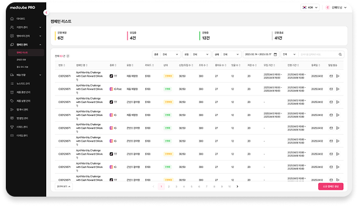
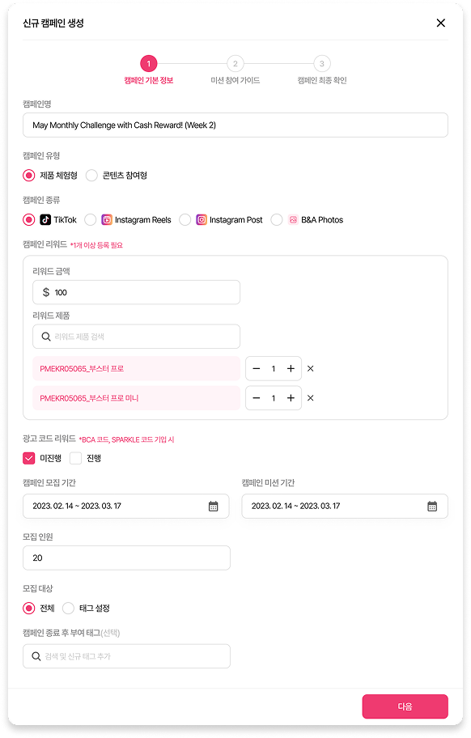
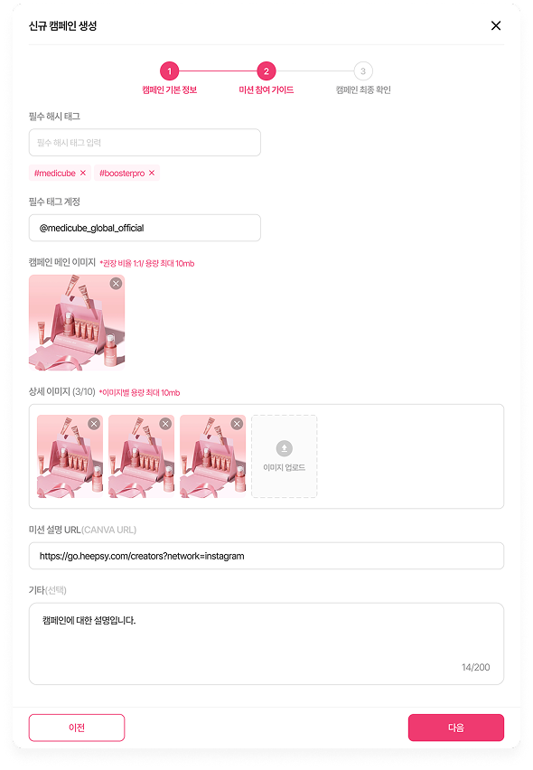
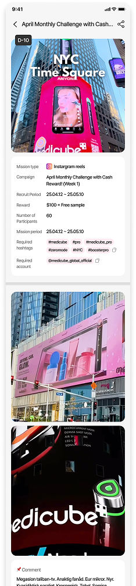
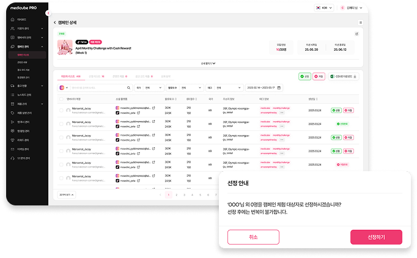

medicube · Influencer Marketing2025.04 ~ 2025.07Building an In-House Admin
Replacing an outsourced platform with an in-house admin
Replaced the annual fee we paid for a third-party influencer management platform with an admin we built
ourselves. I designed medicube PRO to let the marketing team handle everything in-house, from campaign
registration and ambassador selection to content review and performance tracking.
Admin UX/UI Design
80%
Design System
80%
₩300M
Saved annually
~$200,000
92%
Faster time to launch
1 year → 4 weeks
67%
More efficient workflow
180 min → 30 min
Purpose · Hypothesis
Designing campaign operations around how the marketing team actually works
For every campaign, the marketing team relied entirely on an external platform to check the list of
influencer applicants, select ambassadors, review uploaded content, and tally performance. The old
platform's costs scaled up sharply as headcount grew, and because it only really supported the core
features, the inefficient user flow made everyday work a hassle. We started by interviewing the people
actually doing this work to pin down the bottlenecks and pain points first.
Audience
Marketing team campaign managers
Problem
Annual fees for a third-party platform with no room to customize it to our needs
Goal
Cut costs and shorten campaign lead time by moving to an in-house platform
What the marketing team needed
1
Quickly see applicant information, and select and manage new ambassadors
2
Efficiently create new campaigns and track the performance of submitted content
If:
We rebuild the outsourced platform's core workflow (campaign → selection → review → performance) as an in-house admin
Then:
We'll cut the annual subscription cost while keeping, or even improving, the marketing team's day-to-day efficiency
Decisions & Trade-offs
Involved in the full process, from Research to Release, spanning UX/UI design, QA, and release
Stage
Details
Research
Analyzed the third-party platform
Define
Finalized core service features, contributed to branding strategy
01Scoped down to an MVP of 5 core screens instead of rebuilding everything
RiskTrying to reproduce every feature of the outsourced platform could let design and engineering resources balloon indefinitely, and the timeline right along with them.
ResponseWe prioritized the 5 screens the marketing team actually used on repeat: campaign detail, selected ambassadors, content review, approved content, and performance summary. That narrowed the scope to something we could replace in 4 weeks instead of a year.
02Limited requirements to exactly two categories
RiskBecause it's a custom build with unlimited room to customize, trying to accommodate every marketing team request risked the scope growing without end.
ResponseWe organized requirements around exactly two axes: "reviewing applicants and managing ambassadors" and "creating campaigns and tracking performance." Then we designed screens only within that boundary.
03Defined the design system from scratch
RiskWith no existing admin style guide, colors, typography, and grid all had to be built from zero.
ResponseWe set a minimal rule set first: a pink primary color, Pretendard typography, and a Desktop 1920/1440 grid. Then we built it to be reusable across other admin screens down the line.
Design System
Component-based UX/UI design paired with a clear branding direction
Working within medicube's global brand image and primary colors, I defined the color system and UI components end to end: a gray scale, a pink primary color, Pretendard typography, and Desktop 1920/1440px grid rules.
1Defined the primary colors and design components for a new-to-admin brand
2Delivered consistent visual quality that stayed true to the existing brand concept
Deliverables · UX/UI Built Around Core User Needs
One continuous flow, from campaign creation to performance summary
Designed around the needs of the core user, the marketing team, so campaigns can be created quickly and easily by type, applicant lists can be reviewed at a glance, and content review and performance are both just as fast to check.
1Creating a new campaign · List → Basic info → Mission guide → App preview

Campaign list

STEP1 · Basic Info

STEP2 · Mission Guide

In-app view
Set reward, hashtag, and mission period by campaign type (product trial / content participation) and SNS channel, and it's reflected in the ambassador app immediately.
Applicant Management
Approving an ambassador from this screen grants them access to every screen in the app and qualifies them to take part in campaigns.
Ambassador Management
Once approved, applicants show up here with their basic info visible, along with campaign participation history and product shipment records.
Campaign Detail · Selecting Applicants

Managers can select participants directly from each campaign's applicant list, with a clear notice that the choice can't be reversed once made, to prevent mistakes.
Content Review
Content submitted by ambassadors is laid out in a grid for an at-a-glance review, with individual approve/reject actions on each item.
Performance Summary
Core metrics like views, likes, and comments are tallied per campaign, with per-influencer detail available on the same screen.
Outcomes
Cost, time, and efficiency all improved together
₩300M
Saved annually (~$200,000)
1 yr → 4 wks
Time to launch (~92%)
180 min → 30 min
Task turnaround (~67%)
Takeaway: Designing an admin isn't about making screens look nice, but about how faithfully you translate the real day-to-day workflow.
Mirroring the marketing team's daily routine (create campaign → select applicants/ambassadors → review content → summarize performance) directly in the screen structure ended up mattering more to them than the cost savings themselves.